Recruiter Workbench — Switch between branches, create JDs, source applicants, run interviews, and generate offer letters
External Candidate
Applicant Space
Candidate Portal (/login?tab=candidate) — Passwordless magic links, hardware pre-flight test, AI voice interview, document upload, and offer signing
RaaS Headhunter
Bounty Marketplace
External Network — Source talent for hard-to-fill corporate roles and earn escrow placement bounties upon hiring milestones
CH 01 · FLOW 1.1Business Login
Unified Corporate Gateway (Business vs Candidate Portal)
Dedicated enterprise authentication, verified company email access, and complete candidate separation
When your company joins Recruify, your team accesses the platform through the Business Portal Login (/login?tab=business). This entry point is built specifically for enterprise staff, keeping your company's internal operations completely protected from external job applicants.
app.recruify.ai / login?tab=business
BUSINESS LOGIN
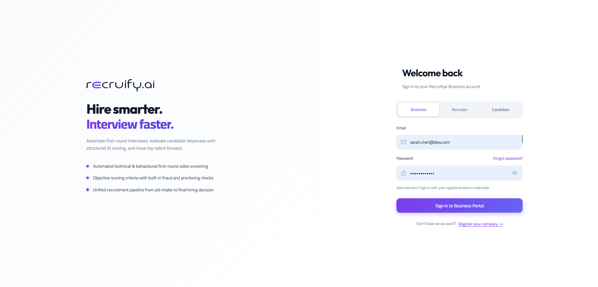
📸
Screenshot: Corporate Business Portal Login Gateway
public/part1-login-corporate-gateway.png
Take a screenshot of the Business Login tab (/login?tab=business) displaying company email input, verified corporate domain validation, and password/SSO options.
Figure 1.1: Unified Business Portal Ingress with Corporate Domain Whitelisting
Key Capabilities of Business Login
CAPABILITY 1
Verified Company Email Only
Employees must log in with their official corporate email address (such as @yourcompany.com). Personal email providers like Gmail, Yahoo, or Outlook are automatically rejected to keep your workspace secure.
CAPABILITY 2
Enterprise Single Sign-On (SSO)
Sign in with one click using your corporate identity provider (Google Workspace, Microsoft Entra ID, or Okta), or authenticate securely with password and one-time verification code (OTP).
CAPABILITY 3
Automatic Workspace Routing
Upon signing in, Recruify automatically identifies your role and your assigned branch location, loading your personalized workspace immediately without extra setup.
Zero Applicant Leakage
Candidates enter through a completely separate, passwordless portal (/login?tab=candidate). Job applicants can never access your internal job requisitions, salary budgets, or team discussions.
How a Team Member Signs In
Open the Gateway: Navigate to https://recruify.ai/login?tab=business in your browser.
Enter Official Email: Type in your verified corporate email address (e.g., alex@company.com).
Authenticate: Click Continue with Company SSO, or enter your password and one-time verification code.
Access Your Workspace: You are immediately routed into your dashboard, pre-filtered to your branch and assigned hiring pipelines.
CH 01 · FLOW 1.2Roles & Hierarchy
Enterprise Roles & Responsibilities Matrix
A clear breakdown of user roles: from Organization Admin down to Recruiters and Candidates
Recruify is designed with a clear, hierarchical permission structure. When your company uses Recruify, your team operates under three distinct internal roles, with candidates and platform admins having their own dedicated scopes:
Digital Offer Signing: Reviews their structured offer letter and signs digitally on screen.
👑
5. Platform Super-Admin (SaaS Operator)
Scope: Platform Host & Multi-Tenant Control (Console: /admin)
Platform Host
Customer Onboarding: Activates new customer company accounts and provisions their dedicated workspaces.
Cloud Storage Setup: Configures centralized cloud storage where resumes and applicant vaults are safely kept.
AI Models & Voice Servers: Manages AI models powering voice interviews and monitors server health.
Global Plan Packages: Sets monthly voice interview minute limits for Trial, Starter, Pro, and Enterprise tiers.
What Each Role Can Do (Capability Comparison)
The table below summarizes what actions each role can take within the Recruify interface:
Platform Feature
Org Admin
Branch Admin
Recruiter (Org Member)
External Candidate
Company Logo, Branding & Legal Info
Full Control
View Only
View Only
No Access
Create & Manage Branch Offices
Full Control
No Access
No Access
No Access
Create Departments & Assign Leads
All Branches
Their Branch Only
No Access
No Access
Invite Members & Assign Roles
All Roles
Branch Recruiters
No Access
No Access
Billing, Subscription & AI Minutes
Full Control
View Branch Usage
No Access
No Access
Branch Switcher (Change Locations)
All Branches
Assigned Branches
Assigned Branches
No Access
Create Job Descriptions (JD Maker)
Yes
Yes
Yes
No Access
Approve JDs & Salary Budgets
Global Override
Mandatory Sign-Off
Submits for Approval
No Access
Review Candidate AI Scores & Transcripts
Yes
Yes
Yes
View Own Status
Conduct Live Human Interview Panels
Yes
Yes
Yes (Assigned Panel)
Interviewee
Generate & Sign Offer Letters
Audit & Approve
Sign as Employer
Generate Offer
Digital E-Sign
CH 02 · FLOW 2.1Organization Admin
Company Profile, Logo Branding & Workspace Setup
Setting up your corporate identity, logo branding, and operational currency
As the Organization Admin (org_admin), you represent the top-level administrator of your company on Recruify. The first step after signing in is establishing your company's profile, visual branding, and workspace policies in the Organization Settings.
app.recruify.ai / org / settings / profile
COMPANY PROFILE
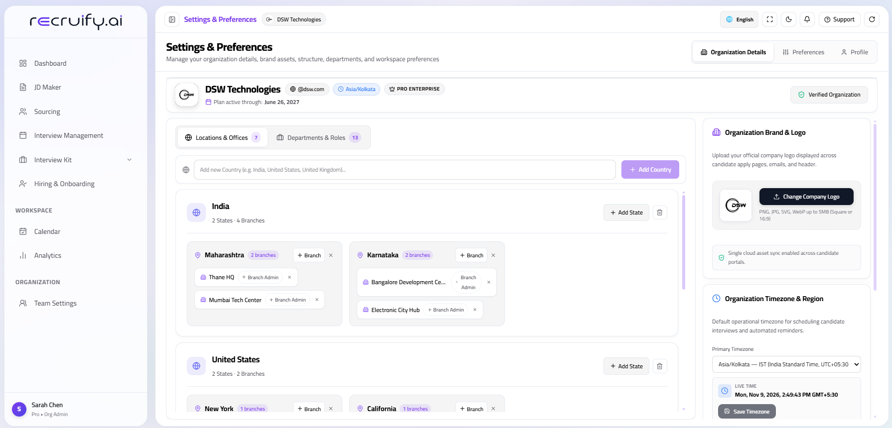
🏢
Screenshot: Company Legal Profile & Logo Uploader UI
public/part1-orgadmin-company-profile.png
Capture the Organization Settings panel showing company legal entity details, registered address, operational currency, and corporate SVG/PNG logo upload.
Figure 2.1: Company Profile, Operational Currency & Corporate SVG Logo Setup
Company Profile Configuration
Enter your official registered business name, tax/VAT registration number, corporate headquarters address, operational currency (USD, EUR, GBP, INR), corporate timezone, and upload your high-resolution SVG or PNG corporate logo.
Where Your Branding Appears Automatically
Once you upload your logo and set your branding, Recruify applies it everywhere across the candidate journey without any manual design work:
Candidate Invitation Emails: Candidates receive beautifully formatted invitation emails featuring your official company logo.
Public Career Application Pages: Job listings show your corporate branding, banner, and verified company credentials.
AI Voice Interview Welcome Lobby: When candidates enter their pre-flight lobby, your company logo is displayed prominently.
Binding Offer Letters: Official digital offer letters automatically embed your logo, company registration number, and address in the formal letterhead.
Structuring regional office locations and appointing local Branch Admins
Modern enterprises operate across multiple cities, regions, and countries. Recruify makes managing multi-location hiring effortless through Branch Offices. The Org Admin can set up headquarters and regional hubs, each with its own designated local leader.
STAGE 1
Branch Overview Cards
Explore regional facilities, active branch headcounts, and operational locations in the visual branch cards view.
🔍 CLICK TO EXPAND
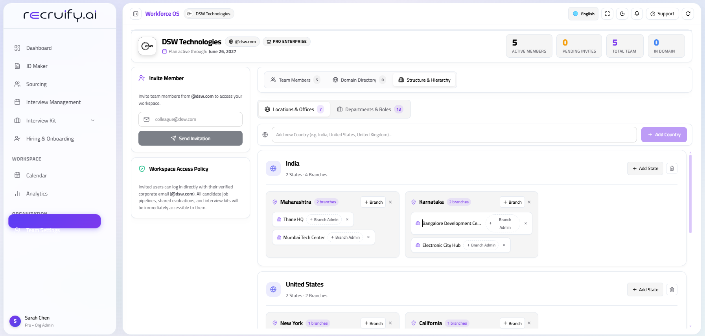
🏛️
Branch Hierarchy Cards UI
public/part1-orgadmin-branch-hierarchy.png
STAGE 2
Add Regional Branch Modal
Specify branch name (e.g. London Tech Hub), country, regional timezone, and assign a senior leader as the branch_admin.
🔍 CLICK TO EXPAND
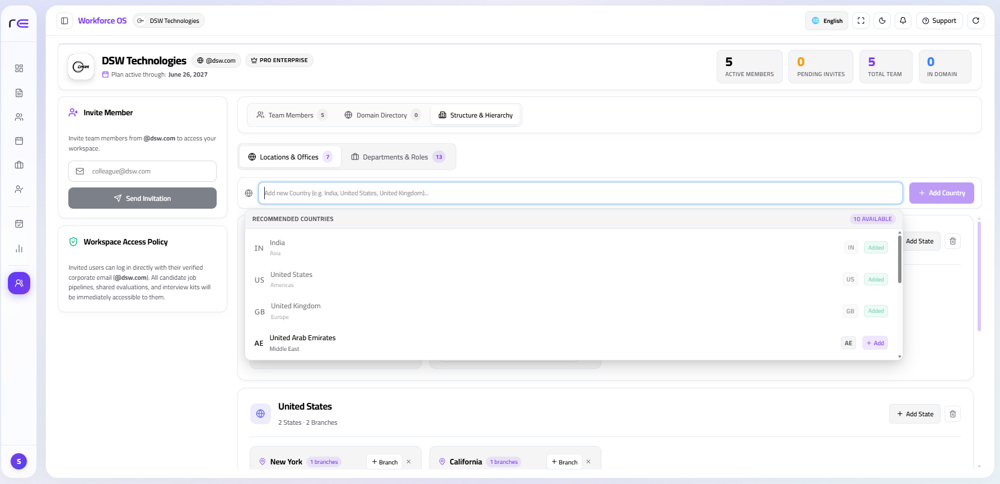
➕
Add Branch Modal UI
public/part1-orgadmin-create-branch-modal.png
How to Create a Branch in 4 Simple Steps
Click "Add Branch Office": In the Organization settings, click the + Add Branch button.
Enter Branch Details: Give it a descriptive name (e.g., Bengaluru Global HQ, New York Office), choose the country, timezone, and physical address.
Appoint the Branch Admin: Select a senior hiring manager or talent director who will lead this location.
Set Regional Target & Quotas: Allocate open headcount targets and monthly interview minute allowances for that office.
Regional Data Privacy
Recruiters working in the London branch only see candidates and requisitions belonging to London. Recruiters in Bengaluru work on Bengaluru jobs. This keeps candidate pipelines clean and compliant with local data privacy laws.
CH 02 · FLOW 2.3Department Modeling
Provisioning Departments Under Branches
Structuring operational teams across engineering, product, sales, and talent acquisition
Under each branch office, the Org Admin creates operational departments to mirror the company's real-world teams. This ensures that when a recruiter creates a job description, it gets automatically routed to the right team and hiring manager.
app.recruify.ai / org / departments
DEPARTMENTS
📸
Screenshot: Department Hierarchy Management UI
public/part1-orgadmin-department-tree.png
Capture the department tree view showing Engineering, Product, Sales, and Talent Acquisition teams with manager assignments.
Figure 2.3: Operational Department Provisioning Under Regional Branch Offices
Common Department Structures
DEPARTMENT 1
Engineering & Technology
Software Engineering, Frontend, Backend, AI/ML, DevOps, and QA teams. Requisitions here automatically trigger technical voice interview rubrics.
DEPARTMENT 2
Product & Design
Product Managers, UX/UI Designers, and Technical Program Managers. Jobs focus on case-study evaluations and product design questions.
DEPARTMENT 3
Talent Acquisition & HR
Technical Recruiters, Campus Hiring Leads, and People Operations specialists managing applicant pipelines.
DEPARTMENT 4
Sales & Customer Success
Enterprise Account Executives, Solution Architects, and Customer Success managers with sales-focused conversational evaluations.
CH 02 · FLOW 2.4Team Management
Member Invitations & Role Assignment
Inviting colleagues, assigning roles, and delegating branch access
Once branches and departments are configured, the Org Admin invites team members to join the workspace. You can invite your entire recruitment team, appoint regional Branch Admins, and add technical interviewers who participate in panel rounds.
STAGE 1
Team Members Directory
View your active team roster, their assigned roles, authorized branch locations, and instant access control buttons.
🔍 CLICK TO EXPAND
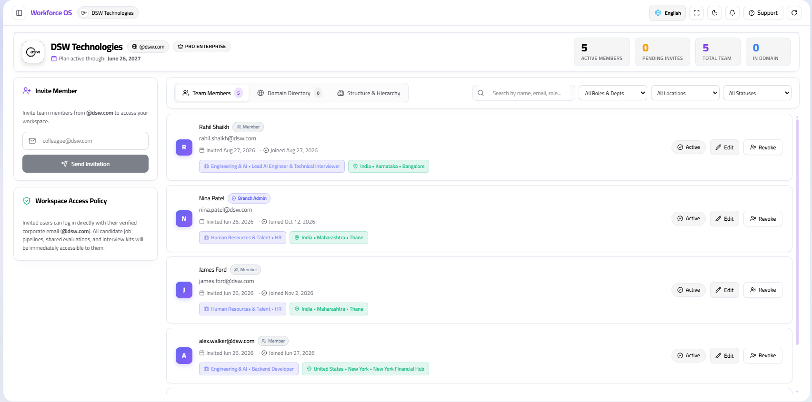
👥
Members Directory UI
public/part1-orgadmin-members-directory.png
STAGE 2
Invite Colleague Modal
Enter your colleague's corporate email, select their role (Branch Admin, Recruiter, Interviewer), and assign their branch.
🔍 CLICK TO EXPAND
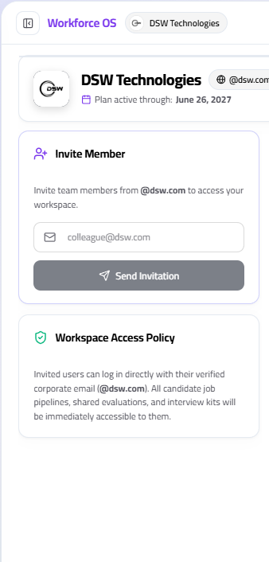
✉️
Invite Modal UI
public/part1-orgadmin-invite-member-modal.png
The 3 Member Roles You Can Assign
Branch Admin: Best for regional hiring directors. Gives full authority over one or more regional branches to balance recruiter workloads and approve job descriptions and salary budgets.
Recruiter (Organization Member): Best for talent acquisition specialists. Allows them to create JDs in JD Maker, manage applicant pipelines, conduct interviews, and prepare offer letters.
Interviewer: Best for senior engineers or team leads. Allows them to view candidate profiles assigned to their panel and submit structured interview scorecards.
Instant Offboarding & Security
If a team member changes roles or leaves your company, the Org Admin can deactivate their account with a single click. Their active session is revoked immediately, preventing any unauthorized access to company data.
CH 02 · FLOW 2.5Billing & Governance
Plan Subscription, AI Usage Tracking & Audit Logs
Monitoring allocated AI interview minutes, managing subscription tiers, and tracking audit logs
The Organization Admin (org_admin) has exclusive access to the company's billing dashboard, subscription plans, and tamper-proof compliance logs across all company facilities.
STAGE 1
Subscription & Voice Quota Usage
Monitor live consumption of conversational voice minutes against your monthly plan allowance, view per-branch usage, and upgrade plan tiers.
🔍 CLICK TO EXPAND
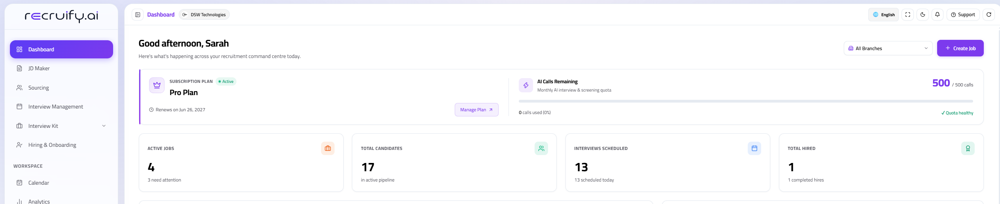
💳
Billing & Quotas Dashboard UI
public/part1-orgadmin-billing-quotas.png
STAGE 2
Company Compliance Audit Trails
Review an immutable, timestamped record of user logins, role changes, branch modifications, and offer letter generation with one-click CSV export.
🔍 CLICK TO EXPAND
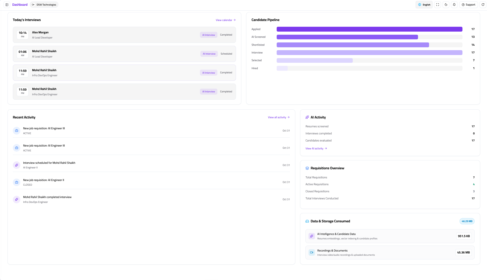
📜
Audit Logs Export UI
public/part1-orgadmin-compliance-audit-logs.png
Managing Your Company's AI Minutes & Seats
In the Billing tab, you can view your monthly active minutes gauge in real time (e.g. 1,420 of 5,000 minutes used). As your hiring ramp increases:
Upgrade Subscription: Upgrade easily between Starter, Pro, and Enterprise tiers with integrated Stripe checkout.
Add Recruiter Seats: Add additional recruiter licenses as your talent acquisition team grows.
Download Invoices: Access and download complete monthly VAT/GST tax receipts and billing history for your finance team.
How Branch Admins manage their local office and switch between regional locations
A Branch Admin (branch_admin) is an operational leader appointed by the Organization Admin to direct hiring for a specific branch (such as the London Innovation Hub, Bengaluru Engineering HQ, or San Francisco Office). Their entire interface is automatically scoped to that branch's requisitions, recruiter team, candidate pipelines, and regional salary budgets.
TOP NAVIGATION HEADERBranch Selector Dropdown
📍 Active Location:London Innovation Hub · Regional Branch
Managed by regional director. Elevation requires Org Admin authorization.
How Context Switching Operates
When a Branch Admin manages more than one location (e.g. London and Bengaluru), there is no need to maintain separate email logins:
Open Branch Selector: Click the location pill in the top-right application header.
Select Destination Office: Choose any authorized branch from your assigned directory.
Instant Real-Time Context Realignment: In under 150 milliseconds, the dashboard dynamically swaps:
Active Job Requisitions and talent pipelines.
Recruiter workload balancing and interviewer schedules.
Regional currency and CTC compensation ranges (e.g., GBP £ vs. INR ₹).
Local hiring velocity metrics and compliance logs.
Org Admin vs. Branch Admin Operational Scope
The platform enforces a clean boundary between tenant-wide governance and regional office execution:
Governance Area
Organization Admin (Global)
Branch Admin (Regional)
Workspace Perimeter
Company-wide across all branches, divisions, and countries.
Strictly isolated to authorized local branch offices.
Department Setup
Defines global company departments (Engineering, Sales, HR).
Maps local branch teams into authorized corporate departments.
Job Requisitions
Sets global hiring budgets, headcount caps, and plan quotas.
Reviews local JD drafts, approves CTC bands, and activates job publishing.
Team Balancing
Invites members and assigns platform-wide role permissions.
Assigns requisitions, sets interviewer hours, and monitors recruiter bandwidth.
Billing & Cloud Keys
Stripe subscription, AI voice minutes pool, AWS/MinIO credentials.
Zero access — completely insulated from global billing and cloud keys.
Zero Cross-Branch Data Leakage
Recruiters and Branch Admins cannot view compensation bands, candidate feedback, or active offers from other branch offices unless explicitly granted dual-branch credentials by the Organization Admin.
CH 03 · FLOW 3.2Team Optimization
Managing Branch Teams & Workload Balancing
Balancing recruiter job assignments and setting interviewer weekly hours
During intense hiring cycles, recruiter burnout occurs when job requisitions are distributed unevenly. The Branch Admin dashboard features built-in Recruiter Capacity & Workload Balancing tools, enabling leadership to track real-time bandwidth and balance open requisitions across the team.
The Team Capacity Command Board
Each recruiter assigned to the branch is represented by an interactive capacity card reflecting their active requisition load, open candidate pipelines, and weekly interviewing hours:
BANDWIDTH: 60%
Sarah Jenkins · Senior Technical Recruiter
Active Requisitions: 3 of 5 Roles Assigned
• Candidate Pipeline: 24 active candidates across 3 roles
• Weekly Interview Hours: 6 / 12 hours booked
• Status:🟢 Available for New Job Requisitions
BANDWIDTH: 100% (MAX)
David Kim · Engineering Recruiter
Active Requisitions: 6 of 6 Roles Assigned
• Candidate Pipeline: 52 active candidates across 6 roles
• Weekly Interview Hours: 15 / 15 hours booked
• Status:🔴 At Maximum Capacity — Assignment Locked
Identify Overloaded Recruiter: Review the bandwidth gauges. When a recruiter hits 100%, the platform flags candidate response delays.
Select Requisition to Reassign: Click on the specific open requisition (e.g. Senior Backend Engineer) and select Reassign Lead Recruiter.
Confirm Transfer: The modal suggests available recruiters sorted by relevant department expertise and current bandwidth. Select the new lead and click Transfer Requisition. All candidates, interview notes, and reminders transfer instantly without candidate disruption.
Interviewer Panel Scheduling & Weekly Caps
In addition to full-time recruiters, technical hiring requires engineering and product team interviewers. Branch Admins set guardrails to protect engineer productivity:
Interviewer Role
Weekly Hour Cap
Calendar Integration
Automatic Guardrail
Principal Engineers / Tech Leads
Max 4 Hours / Week
Google Calendar · Outlook 365
Interview slots auto-block once 4 sessions are scheduled.
Senior Staff Engineers
Max 6 Hours / Week
Google Calendar · Outlook 365
Minimum 30-minute buffer enforced between technical rounds.
Engineering Managers
Max 8 Hours / Week
Google Calendar · Outlook 365
Blackout periods respected during sprint planning and releases.
CH 03 · FLOW 3.3Requisition Governance
Job Requisition Approval & Budget CTC Sign-Off
Reviewing new job descriptions, compensation bands, and approving public distribution
To maintain fiscal discipline and brand consistency, recruiters cannot publish job openings directly to career boards or social channels. Every job draft generated via the JD Maker Studio enters the Branch Admin Approval Queue.
The 3-Section Requisition Sign-Off Studio
When a Branch Admin opens an approval request, the interface presents a structured side-by-side review studio:
After inspecting the three columns, the Branch Admin executes one of three actions:
[✅ Approve & Publish]
Locks the compensation band, activates public hosted career pages, generates vendor agency intake links, and alerts the recruiter team to begin sourcing.
[💬 Request Adjustments]
Opens an inline feedback box. The Branch Admin leaves specific notes (e.g., "Cap base compensation at £105,000 and add Kubernetes to must-have skills").
[❌ Reject Requisition]
Rejects headcount allocation with a mandatory reason (e.g., "Position frozen due to Q3 budget realignment"). Draft is archived with immutable audit log.
CH 03 · FLOW 3.4Regional Intelligence
Local Regional Velocity & Analytics
Tracking hiring speed, funnel drop-offs, and offer acceptance ratios
The Local Regional Analytics dashboard equips Branch Admins with deep visibility into local hiring throughput. Instead of guessing where candidates get stuck, leadership tracks operational velocity from requisition creation to signed offer letter.
Top Operational Velocity KPIs
Key operational metrics calculated in real-time across all active branch requisitions:
Culture fit and compensation alignment discussion.
5. Offer Extended & Signed
17 Offers Extended
3.1 Days
88.2% Accepted
Digital e-signature and interactive CTC breakdown.
Exporting Reports & HRIS Integration
Branch Admins can generate automated leadership summaries with a single click:
One-Click PDF Executive Summary: Download formatted reports for regional board meetings.
Raw CSV / Excel Pipeline Export: Export full candidate histories, interview scores, and CTC data.
Automated Monday Morning Digest: Automatically email team velocity snapshots to branch department leads.
CH 04 · FLOW 4.1Recruiter Operations
Member Sign-In & Workspace / Branch Switcher
The recruiter's daily command center and instant branch location switching
Organization Members (member) — including Talent Acquisition Leads, Senior Recruiters, Sourcers, and Hiring Coordinators — execute day-to-day hiring on Recruify.
Upon authenticating via recruify.ai/login?tab=business, members land directly in their Recruiter Workbench. This workspace is purpose-built for high-volume recruitment: completely free from billing administration or system settings, and pre-scoped to their assigned branch and active job requisitions.
Anatomy of the Recruiter Workbench
The recruiter dashboard is organized into four high-impact operational zones:
RECRUITER WORKBENCHDaily Operational Command Center
Signed in as: Alex Chen · Senior Recruiter
⚡Zone 1: Quick Action Launchpad
Immediate access to core hiring workflows without navigating nested menus:
+ Create New Job (Launch JD Maker)
📥 Multi-Channel Sourcing Hub
✍️ Generate & Send Offer Letter
📋Zone 2: Assigned Requisitions
Real-time cards of all open roles assigned to you:
Lead Backend Engineer: 18 Candidates · 4 in AI Review
Staff Frontend Architect: 12 Candidates · 2 in Panel Round
Product Designer: 8 Candidates · 1 Offer Pending
🔔Zone 3: Live Priority Alerts
Instant notification feed of actionable candidate events:
Score Ready: John Doe cleared AI Voice Interview (Score: 88%)
Offer Signed: Sarah Connor signed Offer Letter (Joining Sept 1)
When a recruiter is assigned to support multiple offices (for example, sourcing for both the London and Dublin offices), they switch branch contexts directly from the top header without signing out:
Click the Active Branch dropdown in the top bar.
Select your target location: your entire requisition board and candidate list instantly filter to that branch.
New job requisitions created will automatically be tagged to the selected branch and route to that branch's Admin for approval.
Recruiter Scope vs. Admin Powers
Capability
Organization Member (Recruiter)
Branch Admin
Job Creation
Drafts new roles using JD Maker (Voice, Upload, Form).
Reviews, signs off on CTC budget, and authorizes publishing.
Monitors overall conversion rates and stage velocity.
Interview Evaluations
Reviews AI voice transcripts, video replays, and scores.
Oversees panel consistency and interviewer hours balance.
Offer Letters
Drafts binding offer letters within approved salary bands.
Final sign-off on offer distribution to candidate portal.
FEATURE 01 · MASTER FLOWThe Ultimate JD Maker
JD Maker: End-to-End Architectural Lifecycle
The AI-native studio transforming rough recruiter concepts into structured, candidate-ready job requisitions
In Recruify, JD Maker (frontend/src/components/MainArea/JdMakerLanding.jsx) is the foundation of the talent lifecycle. It solves the biggest bottlenecks in modern hiring: ambiguous role briefs, recruiter-hiring manager misalignment, and delayed job postings. By fusing conversational AI, multi-format file parsing, and automated skill weighting, it generates bias-free, candidate-ready requisitions in under 3 minutes.
End-to-End JD Maker 4-Phase Generative Pipeline
JOBS MICROSERVICE · PORT 8104 · AGNO ORCHESTRATOR
PHASE 01
Multi-Modal Intake
Initiate via Conversational Voice Discovery Session, PDF/Docx Document Upload, or Guided Parameter Form.
voice_routerresume_parserPOST /intake
PHASE 02
Agno AI Clarification
The Talent Discovery Specialist infers canonical seniority, detects ambiguities, and asks 2–3 targeted probing questions.
Different hiring scenarios demand different levels of input. Recruify accommodates every recruiter workflow through three dedicated ingestion channels. Click on any screenshot card below to expand it full-screen:
CHANNEL A
Conversational Voice Discovery Session
Powered by backend/modules/jobs/voice_router.py and discovery_agent.py. The recruiter or hiring manager clicks Start Voice Discovery and speaks naturally into their microphone.
Human-Like Dialogue: Conducts a brief, consultative 3-minute interview to extract real requirements.
Unscripted Probing: Uncovers unspoken deliverables and team context that static forms miss.
Real-Time Entity Mapping: Transcribes audio into structured role attributes with zero manual typing.
🔍 CLICK TO EXPAND
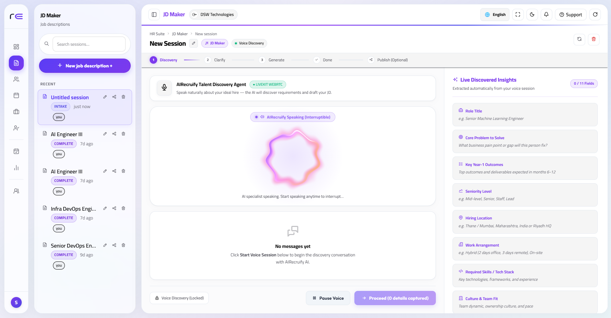
🎙️
Voice Discovery Session UI
public/jd-intake-voice-discovery.pngClick to expand when added
CHANNEL B
Document & JD File Ingestion
Powered by frontend/src/phases/UploadJdDiscovery.jsx and backend/modules/jobs/common/resume_parser.py.
Broad File Support: Ingests .pdf, .docx, .doc, .txt, .rtf, and .md up to 15MB.
Raw Text Tab: Direct copy-paste area for rough bullets, email threads, or notes.
Heuristic Tokenization: Strips noise and maps text into canonical skill tags.
🔍 CLICK TO EXPAND
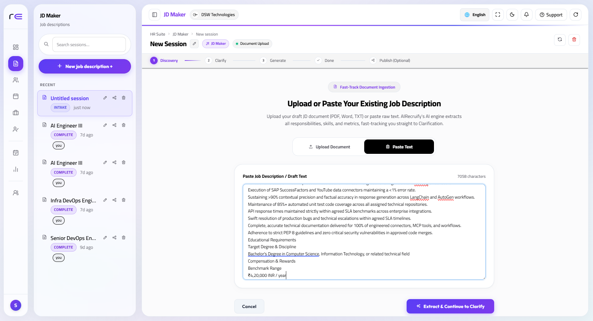
📁
Document Upload & Raw Text UI
public/jd-intake-file-upload.pngClick to expand when added
CHANNEL C
Structured Parameter Form
Powered by POST /api/v1/jobs/sessions/{id}/intake. Designed for rapid, standardized enterprise hiring.
Mandatory Meta: Role Title, Target Department, and Branch Facility.
Workplace Policy: On-Site, Hybrid (e.g. 2 days office), or 100% Remote.
🔍 CLICK TO EXPAND
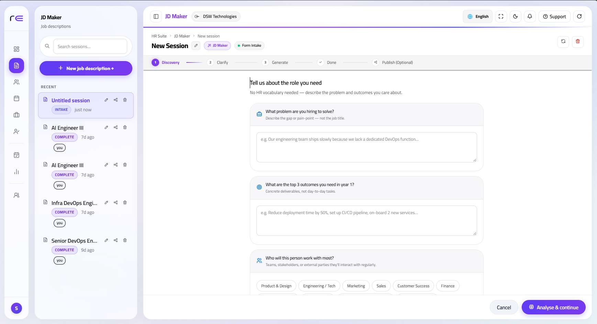
📋
Structured Parameter Form UI
public/jd-intake-parameter-form.pngClick to expand when added
FEATURE 01 · PHASE 2Interactive Clarification
Phase 2: Agno AI Clarification & Role Inference
Dynamic ambiguity detection, role seniority inference, and targeted recruiter follow-up questionnaires
Most traditional JD generators produce generic, bloated job descriptions because they generate text blindly from incomplete prompts. Recruify's Agno Talent Discovery Specialist (jobs_manager/discovery_agent.py) introduces an active clarification gate:
How the Clarification Engine Operates
Upon ingesting the intake data, the agent evaluates the brief across four critical dimensions:
1. Seniority Boundaries
Detects whether experience requirements match expected leadership scope (e.g., distinguishing between a Staff Engineer vs Senior Engineer).
2. Tech Stack Ambiguities
Flags ambiguous requirements (e.g. "cloud experience") and asks whether AWS, GCP, or Azure multi-region deployment is specifically mandated.
3. Compensation Alignment
Validates whether the proposed CTC band conforms to regional market benchmarks for that seniority tier.
4. Inferred Taxonomy
Maps the requisition to Recruify's canonical role database (InferredRole) for consistent organizational reporting.
Interactive Clarification Flow
When ambiguities are found, the system issues DynamicQuestion items displayed in the recruiter UI. The recruiter answers them via one-click chips or short text before generation commences:
PROBING QUESTION 1: "The brief mentions 'distributed backend', but does not specify messaging protocols. Will this service require Kafka, RabbitMQ, or Redis Streams?" RECRUITER CHIP SELECTION: [Redis Streams & Pub/Sub]
PROBING QUESTION 2: "Is on-call incident rotation expected for this position?" RECRUITER CHIP SELECTION: [Yes - Secondary on-call once per month]
app.recruify.ai / jobs / jd-maker
UI SHOWCASE
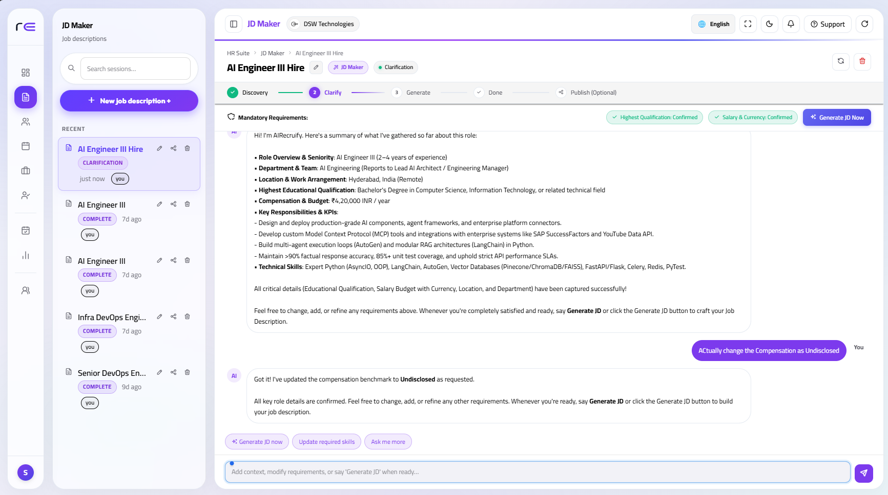
📸
Screenshot: Agno AI Dynamic Clarification Questionnaire
public/jd-maker-agno-clarification.png
Take a screenshot of the clarification screen with follow-up questions and recruiter selection chips.
Phase 3: Structured AI Skills Extraction & Rubric Formulation
Synthesizing the strict JobDescription schema, weighting competencies, and formulating evaluation criteria
Once clarification responses are locked, backend/modules/jobs/jobs_manager/generator.py triggers the Agno synthesis engine. It outputs a rigorously typed JobDescription object partitioned into functional evaluation layers:
🎯Must-Have Skills (Mandatory Gates)
Hard prerequisites non-negotiable for role execution (e.g. Python 3.12, FastAPI, PostgreSQL RLS, Docker). These tags act as strict pass/fail filters in candidate resume parsing and trigger automated confidence flags during initial AI voice screenings.
⚡Nice-to-Have Skills (Score Multipliers)
Secondary competencies (e.g. WebRTC ICE negotiation, LiveKit SFU, OpenFGA, Agno Agents). Rather than disqualifying candidates, these competencies award bonus scoring points and dynamically inject specialized deep-dive questions during AI conversational interviews.
📈90-Day Key Performance Indicators (KPIs)
Measurable outcomes expected from the candidate within their first 90 days (e.g. "Deploy distributed Redis cache reducing p95 API latency below 40ms"). Converted directly into scoring rubrics for human panel interviewers.
💰Salary CTC Benchmark & Equity Guidance
Calculates local currency market ranges, fixed base compensation (Min/Max), performance bonus percentage, and equity allocation brackets based on branch location and seniority tier.
In frontend/src/phases/JDOutput.jsx, the recruiter reviews the synthesized requisition in a production-grade editorial studio equipped with export, translation, and multi-channel syndication capabilities:
FEATURE 1
In-Line Rich Text Editor
Recruiters can modify any field on the fly: polish role responsibilities, reorder required skills, adjust salary bounds, and add bespoke team cultural notes with zero friction.
FEATURE 2
One-Click Multilingual Translation
Powered by translate_jd_route. Instantly renders localized editions in Arabic (ar) with native Right-to-Left (RTL) styling, French (fr), German (de), and English without losing technical taxonomy.
FEATURE 3
Multi-Format Export
Download branded PDF documents, editable Word (.docx) files, clean Markdown for GitHub/Notion, or copy pre-formatted rich text to clipboard with a single click.
Multi-Channel Sourcing & Syndication
Via frontend/src/components/JdShareModal.jsx, the job requisition is broadcast across internal and external sourcing channels:
🌐 Public Career Portal
Direct public application link (/jobs/apply/{public_id}) featuring candidate pre-flight checks and magic-link authentication.
💼 LinkedIn 1-Click Sourcing
Pre-formatted recruiter outreach template with embedded application tracker token.
📋 Naukri & Indeed Feeds
Automated XML syndication feed conforming to global job aggregator schemas.
🎓 Campus Pool Drives
Allocate candidate quota to registered university drives with batch-dialer automated calling.
To eliminate unbudgeted hiring, clicking Submit for Branch Approval transitions the requisition into PENDING_BRANCH_APPROVAL. The regional Branch Admin audits compensation bands and headcount allocation before activating the requisition to APPROVED / PUBLISHED.
CH 04 · FLOW 4.3Talent Sourcing
Multi-Channel Sourcing & Job Publishing
Activating public career pages, external staffing agency links, and university drives
Once approved by the Branch Admin, recruiters activate multi-channel sourcing:
Public Hosted Career Page: A dedicated, mobile-friendly landing page with instant resume upload and parsing.
Real-time conversational voice agents, Smart-Turn turn-taking, and live competence scoring
Once admitted, candidates interact in real-time with Recruify's Conversational Voice Agent:
Sub-100ms Turn-Taking: Powered by the Smart-Turn v3.2 Neural VAD engine on port 8010, the AI detects natural speech pauses without interrupting candidate thinking pauses.
Autonomous Technical Probing: The AI dynamically asks progressive follow-up questions tailored to the candidate's answers.
Real-Time Transcription & Scoring: Speech is transcribed live and scored across competence rubrics stored in ATS records.
The conversational voice pipeline operates via distributed microservices:
Live Presence Dialer: Automatically detects which students are waiting in the digital lobby and dials the next candidate into available recruiter booths.
Passwordless candidate access, live status timelines, and zero friction for applicants
Traditional job portals force candidates to create passwords, complete email verifications, and remember login credentials — resulting in high applicant drop-off before an interview even begins.
Recruify completely eliminates passwords for applicants. Every candidate interacts with the platform via a Single-Use Cryptographic Magic Link sent directly to their verified email address.
The 3-Step Passwordless Candidate Access Journey
From invitation to live application tracking, the candidate experiences zero friction:
STEP 1
Invitation Email Arrives
The candidate receives an automated, beautifully branded email from your company: "You have been invited to interview for [Job Title] at [Company Name]". Inside is a prominent button: [Enter Interview Portal].
STEP 2
Instant 1-Click Verification
Clicking the button launches the portal with a secure, time-limited token. In under 200ms, the platform validates the token and logs the candidate in directly. No password prompts, no captchas, no registration forms.
STEP 3
Personalized Command Center
The candidate is immediately presented with their active application timeline, upcoming interview rounds, interview preparation guides, and document upload checklist.
The Interactive Application Timeline UI
Once inside, candidates track their progress through a clear, horizontal status tracker that updates in real-time as stages are cleared:
APPLICATION #APP-88421
Senior Backend Engineer · Acme Corp (London Hub)
In Progress · Stage 2 of 5
✅
1. ApplicationSubmitted
⚡
2. AI VoiceReady to Start
⏳
3. Tech PanelUpcoming
🔒
4. Document VaultLocked
🔒
5. Official OfferLocked
Security & Strict Perimeter Isolation
The Candidate Portal is completely decoupled from your internal enterprise universe:
Zero Corporate Exposure: Candidates cannot see other applicants, internal recruiter evaluations, CTC hiring budgets, or branch org trees.
Token Expiration: Magic links expire after 7 days or upon completed interview submission. If an expired link is clicked, candidates can request a fresh link with 1 click.
Device Agnostic: Fully responsive across mobile, tablet, and desktop browsers without requiring native app installations.
CH 05 · FLOW 5.2Hardware Diagnostics
Hardware Diagnostic Pre-Flight Check
Camera framing, microphone calibration, and connection readiness testing
To ensure that candidate evaluations are fair, clear, and completely free from audio stutter or camera issues, candidates must complete a 3-Step Guided Pre-Flight Diagnostic before entering the live AI interview room.
This diagnostic runs directly in the candidate's browser in under 45 seconds, verifying hardware capabilities and network latency without requiring any software plugins.
The 3-Step Pre-Flight Diagnostic Wizard
Each diagnostic stage inspects a critical component of the candidate's hardware and network setup:
DIAGNOSTIC 1
Optical Camera & Lighting Framing
The browser displays a live webcam preview with an optical positioning guide:
Face Centering: An oval silhouette guides the candidate to center their head and shoulders.
Lighting Sensor: Warns if the environment is underexposed or severely backlit.
Device Selector: Allows seamless switching between integrated laptop webcams and external USB cameras.
✅ Optical Camera Verified · 720p HD Ready
DIAGNOSTIC 2
Microphone Sensitivity & Gain
Tests microphone pickup and ambient noise suppression:
Live Volume VU Meter: Dynamic decibel bar fluctuates in real-time as the candidate speaks a test sentence ("Hello, I am ready").
✅ Media Server Connected · Latency: 42ms (Optimal)
Diagnostic Criteria & Troubleshooting Guide
Hardware Component
Recommended Specs
Pass Threshold
Instant Troubleshooting Action
Webcam / Video
Integrated 720p or 1080p webcam
30 FPS, unblocked feed
Ensure browser camera permission is set to Allow.
Microphone / Audio
Headset or laptop array mic
> 20 dB dynamic range
Close background media apps; move closer to microphone.
Network Connection
Broadband Wi-Fi or wired Ethernet
Latency < 120ms, 0% packet loss
Disconnect from VPN or switch to a stable Wi-Fi connection.
Supported Browsers
Chrome 90+, Edge 90+, Safari 14+, Firefox 88+
WebRTC & WebAudio API
Update browser to latest stable version if media fails.
All Diagnostics Passed (3 of 3 Verified)Your camera, microphone, and network meet all interview quality standards.
CH 05 · FLOW 5.3Autonomous Evaluation
Proctored AI Voice Interview Room (Sub-100ms Turn-Taking)
Natural conversational turn-taking, real-time audio waveforms, and proctoring fairness
Once pre-flight diagnostics pass, the candidate enters the Autonomous AI Voice Interview Room. Unlike traditional video bots that force candidates to read static text prompts into an empty camera, Recruify features an ultra-low latency conversational voice engine.
The AI interviewer converses naturally: asking contextual questions, listening attentively, allowing conversational interruptions, and responding in under 100 milliseconds — mirroring a genuine discussion with a principal engineering director.
Anatomy of the Live Voice Interview Room
The candidate experience is intuitive, distraction-free, and reassuring:
LIVE INTERVIEW · Question 3 of 6· Distributed Systems & Concurrency
⏱️ 14:22 Remaining🟢 38ms Latency
🎙️
AI Interviewer: "Could you explain how you would handle network partition in a Raft consensus cluster?"
Listening to your answer — speak whenever you are ready.
🛡️ Active Proctoring: Camera · Audio Integrity · Tab Focus Verified
Conversational Turn-Taking & Proctoring Integrity
The interview engine combines conversational fluidity with rigorous evaluation integrity:
Zero Robotic Delays: Powered by sub-100ms turn-taking, the AI detects natural pauses versus momentary thinking breaks, eliminating awkward speech overlaps.
Contextual Follow-Up Inquiries: If a candidate provides a high-level summary, the AI proactively probes deeper (e.g. "What trade-off did you make between consistency and availability in that design?").
Fair, Non-Invasive Proctoring: Monitors camera visibility, multiple voices, and window focus without invasive desktop spyware. If an anomaly occurs, it is flagged in the recruiter scorecard with timestamped context.
Secure credential document uploads and legally binding digital offer letter signing
Once a candidate clears technical evaluation rounds, they advance to the final closing and onboarding milestone. Recruify unites Credential Verification and Digital Offer Acceptance into a single secure portal — eliminating chaotic email attachments and third-party signing apps.
Stage 1: The Encrypted Document Vault
The candidate uploads requested verification documents into dedicated, tamper-proof upload slots:
VERIFIED
1. Government Photo ID
Passport, National Identity Card, or Driver's License.
File: passport_scan.pdf · SHA-256 Hashed
VERIFIED
2. Academic Degree Certificate
Highest educational degree or provisional transcript.
File: degree_certificate.pdf · SHA-256 Hashed
UNDER HR REVIEW
3. Previous Relieving Letter
Service certificate and relieving letter from prior employer.
File: relieving_letter.pdf · Awaiting HR sign-off
VERIFIED
4. Recent Payslips (Last 3 Mo)
Proof of prior compensation and salary bank credits.
File: payslips_q2.pdf · SHA-256 Hashed
Stage 2: Interactive CTC Breakdown & Digital Offer E-Signature
Candidates inspect an interactive compensation card detailing fixed salary, performance bonus, and equity options before executing a legally binding digital signature:
Global multi-tenant governance, Cloud Object Storage (MinIO/S3), foundation LLM registry, and platform quotas
The Platform Super-Admin represents the overall SaaS host operator overseeing all customer organizations on Recruify:
PILLAR 1
Customer Organization Onboarding
Register new customer companies, assign trial packages, monitor enterprise account status, and view global platform activity.
🔍 CLICK TO EXPAND
👑
Super-Admin Console UI
public/part1-superadmin-dashboard-overview.png
PILLAR 2
Cloud Storage Setup (AWS S3 / MinIO)
Connect centralized cloud storage where resumes and applicant vault documents are kept securely, with a live health-check test.
🔍 CLICK TO EXPAND
🪣
Storage Setup UI
public/part1-superadmin-storage-engine.png
PILLAR 3
AI Models & Real-Time Voice Servers
Configure foundation AI models powering job creation and voice interviews, and monitor live streaming server health.
🔍 CLICK TO EXPAND
🧠
AI Models UI
public/part1-superadmin-llm-registry.png
PILLAR 4
Global Plan Limits & Broadcast Announcements
Define subscription tier boundaries (Trial, Starter, Pro, Enterprise), allocate monthly AI voice interview minute caps per organization, and send platform-wide banner announcements.
CH 06 · FLOW 6.2External Network
Recruiter as a Service (RaaS) Marketplace
External freelance headhunter network, bounty payouts, and crowdsourced talent delivery
🚧 Feature In Active Roadmap
Recruiter as a Service (RaaS) will allow certified freelance recruiters to source candidates for corporate requisitions. Headhunters submit pre-screened talent into client pipelines and earn automated escrow bounties upon milestone achievement (e.g. interview clearance, offer acceptance).
Headhunters will operate in an isolated external sandbox with zero access to internal branch hierarchies, corporate member lists, or competitor requisitions.